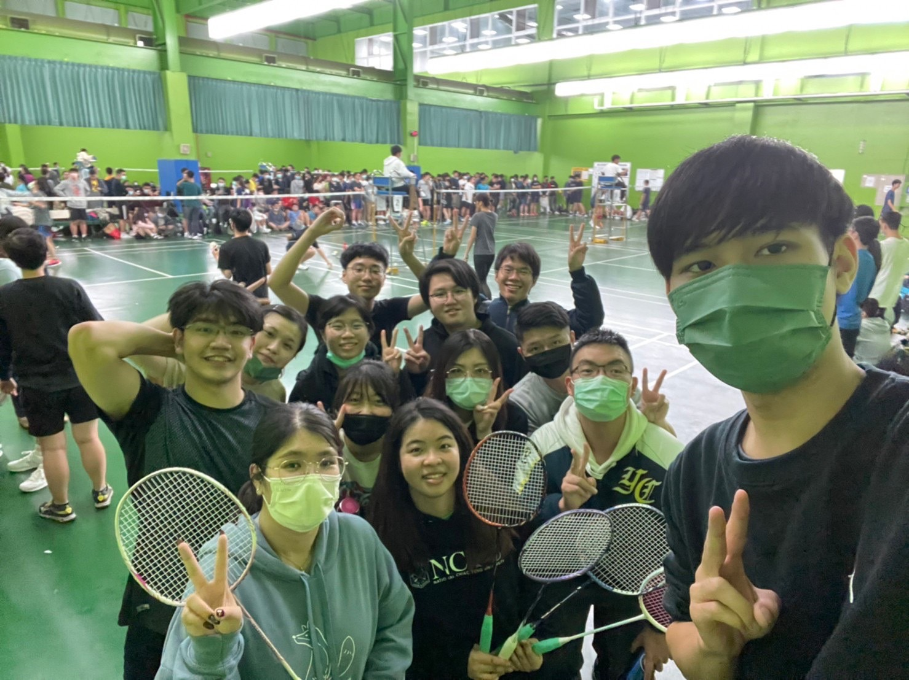

bsolab聖誕活動
亞洲唯一的魔法學校
不再讓歐美專美於前，相隔8世紀，亞洲首座魔法學校確定落腳在前國立交通大學校區。
根據國際巫師聯合會所報告指出，青年巫師的教育工作一直受到魔法部的干擾和壓力，這種情況並不只在英國出現，在亞洲國家這種被麻瓜迫害的行動越來越嚴重。因此促使他們加快建設魔法學校的腳步。
經過國際巫師聯合會多次的推薦及決議，最後決定由國立陽明交通大學生醫工程研究所-陳榮治 副教授披掛上任，擔任第一屆校長。
在一般情況下，所有巫師都有權利進入魔法學校就讀，但一些學校對於學生的血統有所要求。因此需要先請各位青年巫師點擊連結報名，經過校方篩選後將會寄送入學通知書給符合資格的巫師。

生醫競賽唯一支持『ＴＳＭＣ』
請幫我按讚
台灣高齡化社會問題以及慢性病年輕化的趨勢，將間接導致醫院及診所出現醫療量能問題，迫使其需要在醫療品質與數量做出選擇；近期人工智慧(AI)發展快速，學界與業界都爭先投入資源進行開發，AI運用於生醫領域的例子也層出不窮，但現階段礙於醫療法規以及科技倫理的問題，無法利用AI直接取代醫生或是其他檢體的診斷流程，在此背景下，我們轉換想法，從自動駕駛系統與汽車輔助駕駛的例子發想，在醫生問診流程中，提出一套基於自然語意分析(NLP)的AI輔助診斷系統，並且使用React完成使用者框架與流程設計，在新增診斷指標分析與處方箋提醒功能外，也令使用者介面更為直觀易用，用以減緩醫師工作負載，期望還給醫病雙方健康的醫療及工作環境。

世界杯足球賽冠軍
2021/11/23 BSO聯隊踢入決賽
徵聘職缺：博士後研究員
工作地點：國立陽明交通大學交大校區「電機學院 生醫工程研究所」 截止日期：聘滿截止 起聘日期：即日起～計畫截止日112年7月31日止（應聘人員相關資料仍需送至科技部審查，實際起聘日期依科技部審核通過之相關規定辦理，聘任制度亦同）
太空人大挑戰
人因夢想而偉大，太空是這個世代戰爭的新舞台。在無重力的情況下，密閉下的太空艙是細菌生長的溫床，免疫系統的能力下降且無法獲得精密的醫療措施，種種因素導致傷口難以癒合，要等太空人返回地面才能好好處理傷口。我們發想了一個敷料，能讓太空人們，在不小心受傷的時候能藉由這個敷料提升傷口的癒合速度以及降低細菌感染的風險。
世界羽球錦標賽冠軍
2021/11/24 BSO聯隊殺入決賽